Context
Photo gives the page a specific angle instead of repeating the navigation label.
Work / 01
Work opens as a clear creative decision hub: what Studio offers, who it helps, why it matters, and which route to take first.
The first screen combines positioning, proof, primary action, and fast internal navigation, so people can act immediately or compare the rest of the work route with context.
Typographic work hero
Select the closest route and Studio keeps the next step, proof, and follow-up expectation aligned with taste and production trust.
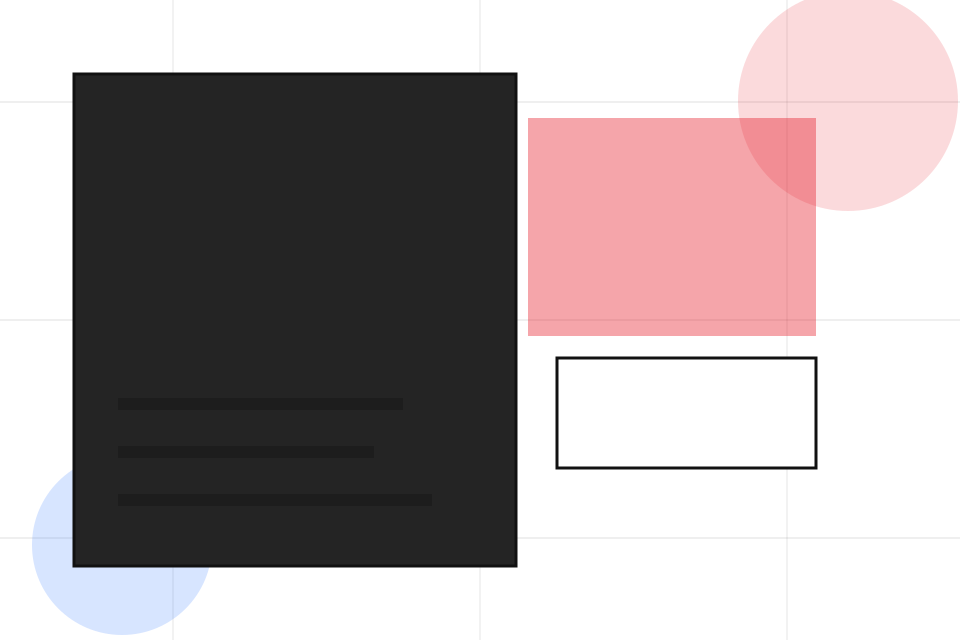
Work / 02
Portfolio adds editorial context to the work route, using the graphic design portfolio grid structure to support taste and production trust before visitors choose a next step.
Studio uses identity project cards and focused copy to make the decision easier to scan, aligning the section with taste and production trust rather than filling space.
Explore WorkPortfolio gives the page a specific angle instead of repeating the navigation label.
The identity project cards show what to compare, what to avoid, and what matters most for creative, design & visual production visitors.
The final cue points to a useful internal route so the section keeps the journey moving.
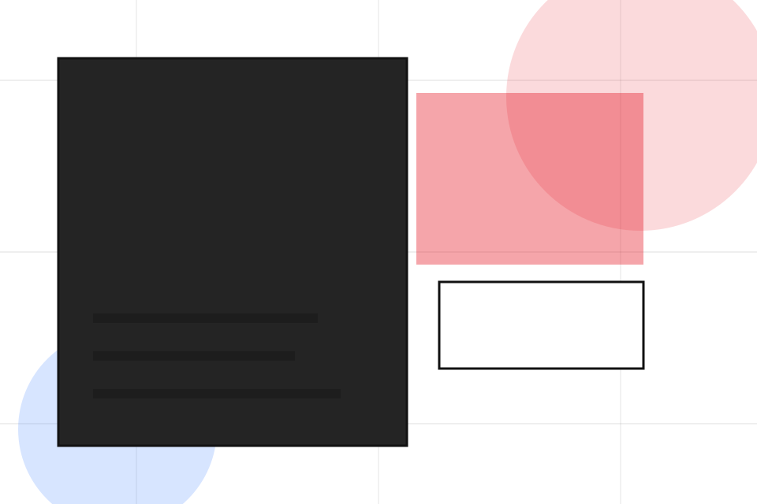
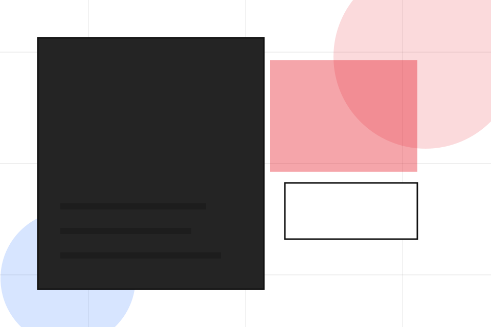
Work / 03
Branding adds editorial context to the work route, using the graphic design portfolio grid structure to support taste and production trust before visitors choose a next step.
Studio uses identity project cards and focused copy to make the decision easier to scan, aligning the section with taste and production trust rather than filling space.
Explore WorkBranding gives the page a specific angle instead of repeating the navigation label.
The identity project cards show what to compare, what to avoid, and what matters most for creative, design & visual production visitors.
The final cue points to a useful internal route so the section keeps the journey moving.
Work / 04
Photo adds editorial context to the work route, using the graphic design portfolio grid structure to support taste and production trust before visitors choose a next step.
Studio uses identity project cards and focused copy to make the decision easier to scan, aligning the section with taste and production trust rather than filling space.
Explore Work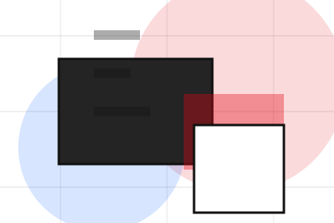
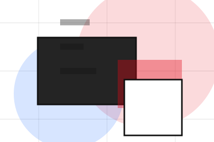
Photo gives the page a specific angle instead of repeating the navigation label.
Work / 05
Video adds editorial context to the work route, using the graphic design portfolio grid structure to support taste and production trust before visitors choose a next step.
Studio uses identity project cards and focused copy to make the decision easier to scan, aligning the section with taste and production trust rather than filling space.
Explore WorkVideo gives the page a specific angle instead of repeating the navigation label.
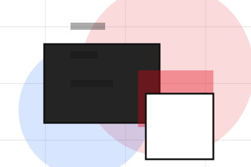
The identity project cards show what to compare, what to avoid, and what matters most for creative, design & visual production visitors.
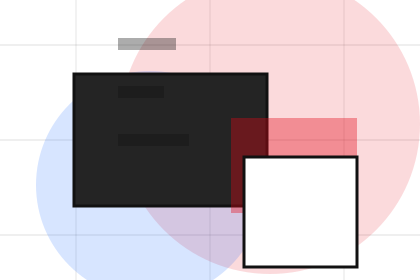
The final cue points to a useful internal route so the section keeps the journey moving.
Work / 06
Digital adds editorial context to the work route, using the graphic design portfolio grid structure to support taste and production trust before visitors choose a next step.
Studio uses identity project cards and focused copy to make the decision easier to scan, aligning the section with taste and production trust rather than filling space.
Explore WorkDigital gives the page a specific angle instead of repeating the navigation label.
The identity project cards show what to compare, what to avoid, and what matters most for creative, design & visual production visitors.
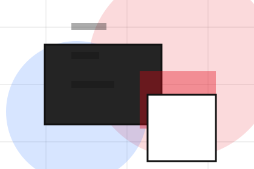
The final cue points to a useful internal route so the section keeps the journey moving.
Work / 07
Details adds editorial context to the work route, using the graphic design portfolio grid structure to support taste and production trust before visitors choose a next step.
Studio uses identity project cards and focused copy to make the decision easier to scan, aligning the section with taste and production trust rather than filling space.
Explore WorkDetails gives the page a specific angle instead of repeating the navigation label.
The identity project cards show what to compare, what to avoid, and what matters most for creative, design & visual production visitors.
The final cue points to a useful internal route so the section keeps the journey moving.
Work / 08
Outcomes shows what changes after the work: clearer decisions, visible progress, and proof points that connect the offer to real outcomes.
The layout connects before-and-after thinking with measured outcomes, making the result easy to scan without promising what the business cannot guarantee.
Explore WorkThe uncertainty, delay, or missed opportunity visitors bring into outcomes.
The clearer, safer, or more valuable state Studio is designed to support.
The visible cue that connects outcomes to a believable decision, not a loose claim.
Work / 09
Reviews converts customer proof into a useful buying signal: the problem, the experience, and what changed afterward.
Proof stays believable by focusing on situation, service experience, and practical change rather than vague praise or unsupported results.
Explore Work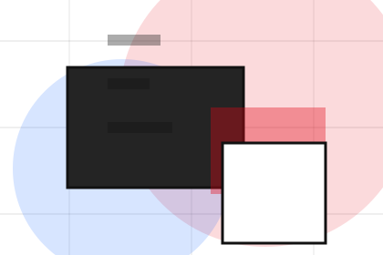
What the visitor needed before choosing Studio, written with enough context to feel real.
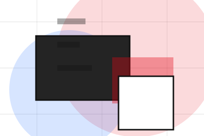
How the service, product, or support felt during the process, not just that it was good.
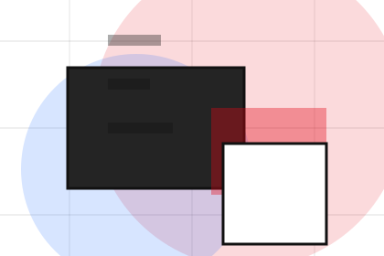
What became easier to decide, complete, buy, book, or trust after the interaction.
Work / 10
Studio closes the work route with a clear action, a quick reminder of the value, and a low-friction way to start the project.
Visitors who are ready can use the primary action. Visitors who are still comparing can scan the section links, proof, and support routes before they start the project.
Start ProjectThe final block keeps the choice simple: act now, compare one more proof route, or send enough detail for a focused response.
Start Projecttaste and production trust
A creative portfolio with identity-led project tiles, typographic scale, lightbox logic, and studio enquiry. Work ends with a direct path to start the project, plus enough context for visitors who still need to compare.
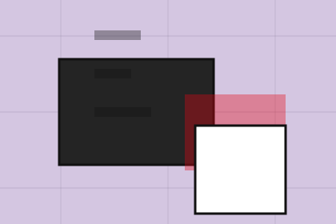
Start ProjectInformation is provided for planning and should be reviewed for the final client, location, and operating rules.